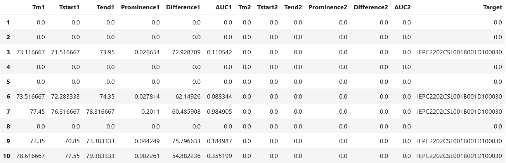
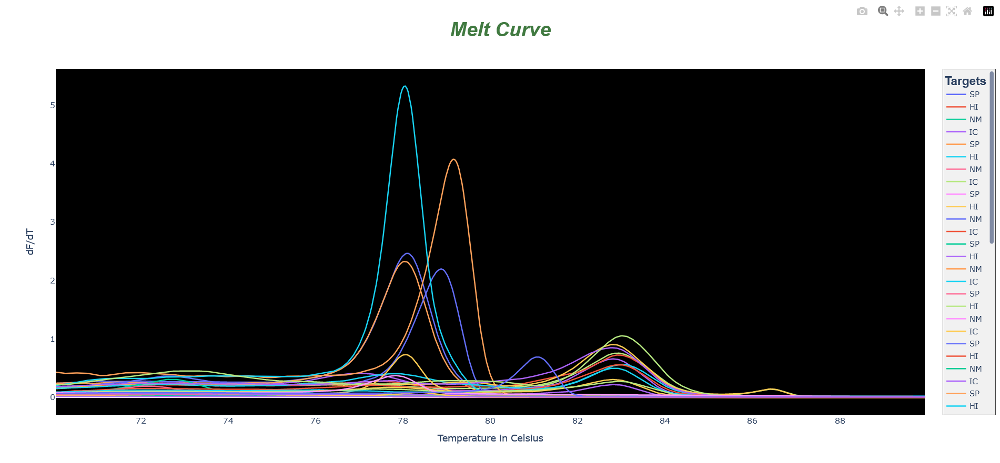
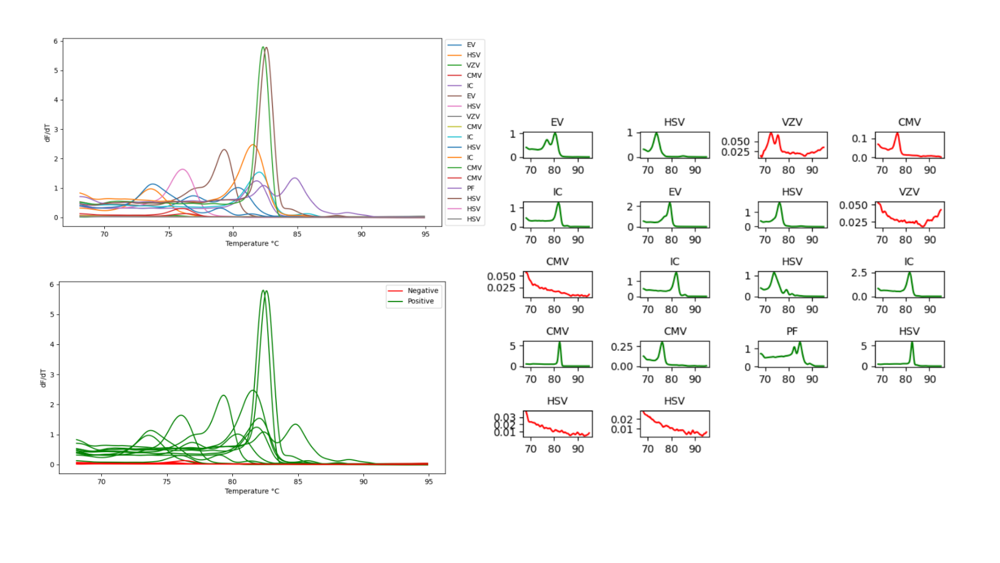
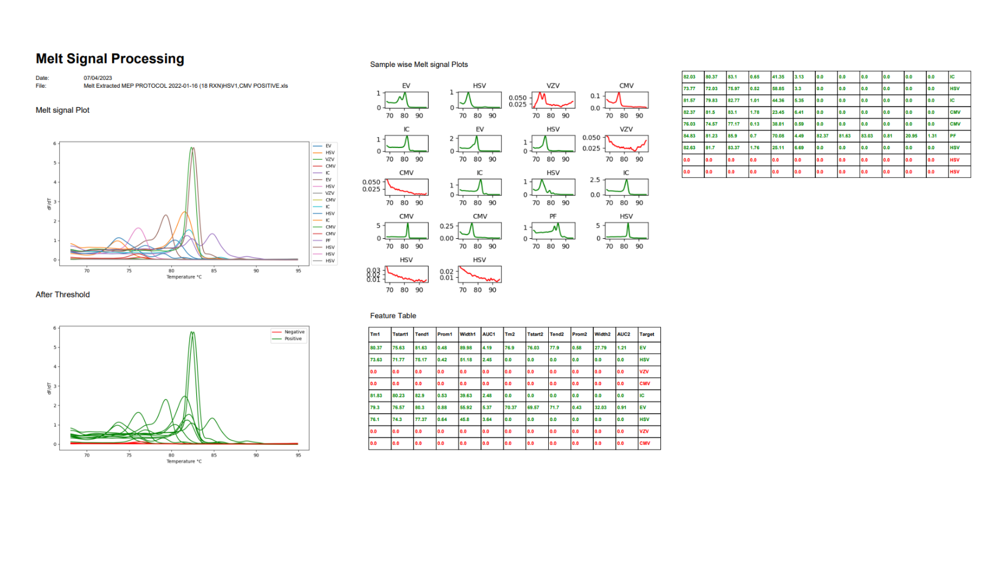

PyHRM
A library for processing DNA Melting signal with feature extraction and thresholding.


Revolutionize Your DNA Analysis
Unlock the true potential of your High Resolution Melting (HRM) data with PyHRM, the ultimate Python-based library for DNA analysis. Designed specifically for processing DNA melting signals, PyHRM empowers researchers and scientists to extract essential features and gain valuable insights from their data effortlessly. With PyHRM, you can extract critical features such as "Melting Temperatures," "Take-off and Touch-down points of melting signal," "Peak prominences," and "Area Under the curve." This powerful library revolutionizes the way you analyze DNA melting data by providing accurate and comprehensive feature extraction, giving you a deeper understanding of your samples. What sets PyHRM apart is its interactive visualization capabilities. Dive into your DNA melting signal with interactive charts and graphs, enabling you to explore and interpret your data like never before. Identify key patterns, observe trends, and make data-driven decisions with confidence. PyHRM goes the extra mile by incorporating vision-based filtering techniques. By eliminating noisy signals from your data, PyHRM ensures that you obtain only genuine peaks and reliable results. Say goodbye to false positives and streamline your analysis process with ease.
Highlights
This Feature extraction module will enable the classification of PCR products based on their melting curve shape,improving the accuracy rate by 30%.
Engineered for processing PCR products’ melting signals, resulting in 50% faster signal processing and feature extraction.
Features like melting temperatures, take-off & touch-down points of melting signal (Temperature at which peak start rising and temperature at which peak falls down),peak prominences, and area under the curve are the outputs of PyHRM.
Key Features
Experience Lightning-Fast Data Preprocessing with PyHRM! Say goodbye to unwanted repeated information in your PCR run files with PyHRM's blazing-fast preprocessing feature. By swiftly extracting only the temperature value and the corresponding signal values, PyHRM streamlines your workflow for optimal efficiency. Gone are the days of manual trimming—the sample labels are automatically refined to retain only the essential target names. With meticulous precision, PyHRM independently processes and maps both the labels and signal values to their respective column indices. Unlock the true potential of your data with PyHRM's unparalleled speed and accuracy in data preprocessing.

Unleash the Power of PyHRM with its Revolutionary Feature Extraction! Experience a cutting-edge solution that harnesses the latest signal processing techniques, such as peak finding, area under the curve calculation, peak shoulder values detection, and peak prominences. PyHRM seamlessly extracts an extensive range of invaluable features from your DNA melting signal, ensuring no detail goes unnoticed. Maximize your analysis potential and unlock the secrets hidden within your data like never before with PyHRM's exceptional feature extraction capabilities.
Unlock the Power of Comprehensive Visualization with PyHRM! Experience a whole new level of data exploration and analysis as PyHRM empowers researchers with its state-of-the-art visualization capabilities. Immerse yourself in a world of intuitive and interactive plots that enable you to delve deep into your data. Uncover hidden patterns, detect anomalies, and effortlessly extract meaningful insights from melting curves like never before. With PyHRM by your side, unraveling the secrets of your research has never been easier. Discover a new dimension of data visualization and gain unparalleled insights with PyHRM's comprehensive visualization features.
Enhance Your Analysis with PyHRM's Cutting-Edge Vision-Based Filtering! Discover a new level of data refinement as PyHRM leverages trained convolutional neural networks to classify and differentiate between noisy and genuine peaks. Experience the power of advanced technology as PyHRM accurately identifies the number of peaks and eliminates disruptive noise from your data. Unleash the true potential of your analysis by focusing solely on genuine peaks, ensuring the extraction of all the aforementioned essential features. With PyHRM's vision-based filtering, achieve unparalleled data clarity and precision, revolutionizing your research with ease.
Elevate Your Analysis with PyHRM's Comprehensive Reporting and Visualization Capabilities! Not only does PyHRM excel in advanced vision-based filtering, but it also goes above and beyond to provide you with PDF-like reports that offer a holistic view of all signals. Gain valuable insights as PyHRM presents individual signal-wise results, clearly indicating whether each signal is categorized as noise or genuine. Unlock the power of data visualization as PyHRM visually represents all signals, enabling you to easily interpret and analyze your data. Additionally, PyHRM ensures you have access to the extracted features, empowering you with essential information for further analysis. Experience the ultimate convenience of comprehensive reports, detailed signal analysis, and feature extraction with PyHRM, revolutionizing the way you uncover meaningful discoveries.
